clojure-lsp Development#
Codebase architecture#
The codebase is dense but well structured, the diagram below will help understand the layers making easier to understand where you need to make your changes.

visualization above's code
---
config:
theme: dark
---
flowchart TB
subgraph Clients["Clients"]
VSCode["VS Code<br>(Calva)"]
Emacs["Emacs<br>(lsp-mode / eglot)"]
Vim["Vim/Neovim"]
IntelliJ["IntelliJ<br>(clojure-lsp-intellij)"]
REPL["Repl"]
OtherEditors["Other editors"]
end
subgraph subGraph1["Cli (cli/)"]
CLIMain["Process<br>(main.clj)"]
LSPServer["LSP Server<br>(server.clj)"]
end
subgraph subGraph2["Core Services"]
Handlers["Features handlers<br>(handlers.clj)"]
Startup["Startup & Init<br>(startup.clj)"]
Config["Configuration<br>(config.clj)"]
DB["Database<br>(db.clj)"]
end
subgraph subGraph3["Analysis Engine"]
KondoIntegration["clj-kondo Integration<br>(kondo.clj)"]
Parser["Parser<br>(parser.clj)"]
Queries["Analysis Queries<br>(queries.clj)"]
DepGraph["Dependency Graph<br>(dep_graph.clj)"]
end
subgraph subGraph4["Feature Implementations"]
Completion["Completion<br>(completion.clj)"]
Diagnostics["Diagnostics<br>(diagnostics.clj)"]
CodeActions["Code Actions<br>(code_actions.clj)"]
Rename["Rename<br>(rename.clj)"]
Hover["Hover<br>(hover.clj)"]
References["Find References"]
Format["Formatting<br>(format.clj)"]
Refactoring["Refactoring Features"]
end
subgraph subGraph5["Support Systems"]
FileManagement["File Management<br>(file_management.clj)"]
Classpath["Classpath Resolution<br>(classpath.clj)"]
SourcePaths["Source Paths<br>(source_paths.clj)"]
Logger["Logging<br>(logger.clj)"]
end
subgraph subGraph6["Core Library (lib/)"]
API["Public API<br>(api.clj)"]
InternalAPI["Internal API<br>(internal_api.clj)"]
subGraph2
subGraph3
subGraph4
subGraph5
end
subgraph subGraph7["External Tools"]
CljKondo["clj-kondo<br>(Static Analysis)"]
Cljfmt["cljfmt<br>(Code Formatting)"]
CljDepend["clj-depend<br>(Dependency Analysis)"]
ClojureDocs["ClojureDocs<br>(Documentation)"]
end
subgraph subGraph8["File System"]
ProjectFiles["Project Source Files<br>(.clj, .cljs, .cljc)"]
ConfigFiles["Config Files<br>(deps.edn, project.clj)"]
Dependencies["Dependencies<br>(JARs, Git repos)"]
CacheFiles["Cache Files<br>(.clj-kondo, .lsp)"]
end
VSCode --> CLIMain
Emacs --> CLIMain
Vim --> CLIMain
OtherEditors --> CLIMain
CLIMain --> API & LSPServer
LSPServer --> Handlers
REPL --> API
API --> InternalAPI
Handlers --> InternalAPI & Completion & Diagnostics & CodeActions & Rename & Hover & References & Format & Refactoring
InternalAPI --> Startup & Config & DB
Startup --> KondoIntegration & Classpath & SourcePaths
KondoIntegration --> CljKondo & Parser & CacheFiles
Format --> Cljfmt
DepGraph --> CljDepend
Hover --> ClojureDocs
Parser --> Queries
Queries --> DB
Completion --> Queries
Diagnostics --> Queries
CodeActions --> Queries
Rename --> Queries
References --> Queries
FileManagement --> ProjectFiles & ConfigFiles
Classpath --> Dependencies
CLIMain:::entryPoint
LSPServer:::entryPoint
Handlers:::coreService
Startup:::coreService
Config:::coreService
DB:::coreService
KondoIntegration:::coreService
Parser:::coreService
Completion:::feature
Diagnostics:::feature
CodeActions:::feature
Rename:::feature
Hover:::feature
References:::feature
Format:::feature
Refactoring:::feature
CljKondo:::external
Cljfmt:::external
CljDepend:::external
ClojureDocs:::external
ProjectFiles:::storage
ConfigFiles:::storage
Dependencies:::storage
CacheFiles:::storage
classDef entryPoint fill:#e1f5fe
classDef coreService fill:#f3e5f5
classDef feature fill:#e8f5e8
classDef external fill:#fff3e0
classDef storage fill:#fce4ec
Coding#
There are several ways of finding and fixing a bug or implementing a new feature:
- The Clojure Way
- Create a test for your bug/feature, then implement the code following the test (TDD).
- Build
clojure-lsp[.bat]usingbb debug-clieach time you have made changes, and test it manually in your client. This is the slowest option.
Whichever development path you choose: For final testing, it is good to rebuild the binary with bb debug-cli.
There are two custom LSP methods clojure/serverInfo/log and clojure/cursorInfo/log. They can assist in debugging.
The Clojure Way#
With a clojure-lsp + nREPL powered Clojure editor you can modify your editor session's clojure-lsp server using the Clojure REPL.
Here's demo video: https://www.youtube.com/watch?v=4UvT0yqBDw8
These are the steps:
bb debug-cli- to build aclojure-lsp[.bat]executable that includes cider-nrepl in the jar. This executable will be saved at the root of the project.- Configure your editor to use this
clojure-lsp[.bat]executable - Have your editor restart its clojure-lsp server
- Issue the clojure-lsp
serverInfocommand - Find the
portentry in the output - Connect your editors nREPL client to this port
- Hack away!
Seeing is believing. An easy way to convince yourself that you can actually change clojure-lsp mid-flight is to:
- Modify the
server-infofunction insrc/clojure_lsp/handlers.clj- Say, you add a
:foo :barentry to the map returned
- Say, you add a
- Evaluate the new
server-infofunction definition - Issue the clojure-lsp
serverInfocommand - Find
:foo :barin the output
You have just modified the LSP server powering your editor while it was running! This is the Clojure way. No recompiling and restarting and reloading. That is some other, non-Clojure, way.
The details in how to perform these steps can vary a bit between the various Clojure editors/plugins.
Visual Studio Code with Calva#
-
This project comes with Calva configuration to use the
clojure-lsp[.bat]executable built in step 1 above. You can skip step 2, unless are running on MS-Widnows, in which case you should update the setting in.vscode/settings.jsonto add the.batextension, i.e."calva.clojureLspPath": "./clojure-lsp.bat". -
To restart the clojure-lsp server, use the VS Code command Developer: Reload Window
- The Hack away! step needs to start with you issuing the command Calva: Load Current File and Dependencies.
Emacs with CIDER#
- To configure Emacs to use the nREPL-enabled executable, run
(setq lsp-clojure-custom-server-command '("~/path/to/clojure-lsp/clojure-lsp")), adjusting the path as necessary. If you add this to your Emacs config, you can skip this step in the future. - To restart the clojure-lsp server, execute the Emacs command
lsp-workspace-restart. - To find the server info, execute
lsp-clojure-server-info. - To connect the nREPL client, run
cider-connect-clj, with "localhost" and the port.
If you re-connect regulary, you may want to add this Emacs shortcut:
(defun lsp-clojure-nrepl-connect ()
"Connect to the running nrepl debug server of clojure-lsp."
(interactive)
(let ((info (lsp-clojure-server-info-raw)))
(save-match-data
(when-let (port (and (string-match "\"port\":\\([0-9]+\\)" info)
(match-string 1 info)))
(cider-connect-clj `(:host "localhost"
:port ,port))))))
Vim with coc.nvim and Fireplace#
- Change
coc-settings.json(:CocConfig)clojure-lsp: {command: "~/path/to/clojure-lsp/clojure-lsp"}, adjusting the past as necessary. - To restart the clojure-lsp server use
:CocRestart - To find the server info,
:echo CocRequest('clojure-lsp', 'clojure/serverInfo/raw')['port'] - To find the server log,
:echo CocRequest('clojure-lsp', 'clojure/serverInfo/raw')['log-path'] - To connect the nREPL client, run
:Connect <port>
If you re-connect regulary, you may want to add something like this to your vimrc:
" Copies the log-path to your clipboard
nnoremap <silent> crsl :call setreg('*', CocRequest('clojure-lsp', 'clojure/serverInfo/raw')['log-path'])<CR>
" Connects to nrepl
nnoremap <silent> crsp :execute 'Connect' CocRequest('clojure-lsp', 'clojure/serverInfo/raw')['port']<CR>
Neovim with Conjure#
- Change the lsp config
cmdto "~/path/to/clojure-lsp/clojure-lsp", adjusting the path as necessary. - To restart the LSP:
- To stop the clojure-lsp server, use
:lua vim.lsp.stop_client(vim.lsp.get_active_clients()) - To start the clojure-lsp server, use
:edit - To find the server info or the log file, use
:lua clients = vim.lsp.get_active_clients() for k, client_data in ipairs(clients) do id = client_data.id end client = vim.lsp.get_client_by_id(id) result = client.request_sync("clojure/serverInfo/raw", {}, 5000, 15) print('port = ' .. result.result.port) print('log-path = ' .. result.result['log-path']) - To connect the nREPL client, run
:ConjureConnect <port>
Debugging & Profiling#
The nREPL includes tools for debugging and profiling clojure-lsp. See cli/dev/clojure_lsp/debug.clj.
If you're interested in using the profiling tools in that file, you'll need to be familiar with criterium and clj-async-profiler.
Note that the performance of clojure-lsp is highly dependent on the size of its db. If you load a repl with -A:build, you'll have access to the debugging tools, but the db will be nearly empty. Follow the [steps][#the-clojure-way] above to connect to an nREPL which has a populated db.
Testing#
Run bb tasks for a list of available dev tasks.
The codebase consists of the lib/ library and the cli/ program which depends on it.
bb test-lib,bb test-cli, andbb test(for both of the above).
cli/ produces a standalone .jar file that can be converted to a self contained clojure-lsp[.bat] script or a clojure-lsp[.exe] binary executable file.
bb prod-jar->cli\standalone jar,bb prod-cli-> executable script with embeddedcli/jar,bb debug-cli-> same asprod-clibut includes support forcider-nreplandclj-async-profile, andbb native-cli-> binary executable produced withgraalvm.
There are also cli/ integration tests. They require ./clojure[.bat|.exe] to have already been built with one of the above cli tasks (__NOTE:__always ensure that you rebuild the cli/ executable every time you make changes to lib/ or cli/ source code so tha the integration tests use an up to date executable).
bb integration-test
The same development version can be used to lint all of the source code.
bb lint
Writing tests#
A test should be able to run on all JDK versions in scope starting with 1.8 and across GNU/Linux, macos and MS-Windows operating systems.
The test author should be aware of the following important differences between *nix and windows:
- Line endings
- On *nix: the single Line Feed (LF) char, i.e.
\n. - On windows: the Carriage Return (CR) followed by the LF char (CRLF), i.e.
\r\n.
- On *nix: the single Line Feed (LF) char, i.e.
- Paths
- On *nix: Use
/as the path separator, absolute paths start with/. - On windows: use
\as the path separator, absolute paths start either with a drive letter followed by:\, i.e.[A-Za-Z]:\(e.g.c:\tempandD:\src) or with a double\\indicating a network path (e.g.\\computer39\temp).
- On *nix: Use
Below are a few hints to assist with writing test that work accross the different platforms.
- Line Endings
- When comparing strings, Use
clojure-lsp.test-helper.internal/string=with\nin your expected result.- e.g. use
(is (h/strings= "one\n" result)instead of(is (= "one\r\n" result))or(is (= "one\n" result)).
- e.g. use
- Use
h/str-includes?with\nin the string to search for instead ofclojure.string/includes?.- e.g.
(is (h/str-includes? (slurp "path") "something\n"))instead of(is (str/includes? (slurp "path") "something\n"))or(is (str/includes? (slurp "path") "something\r\n")).
- e.g.
- When comparing strings, Use
- Paths
- Always use
babashka.fs/canonicalizewhen converting a relative path to an absolute path. Avoiding using any of java File/Path absolute or canonical equivalent fns. This ensures that the drive letter on windows is always in capitals (e.g.D:\instead ofd:\). This is also the convention used throughout the codebase and it works as well with both existing and non-existing files. - Use
clojure-lsp.test-helper.internal/file-path,clojure-lsp.test-helper.internal/file->uriwith *nix paths. They are converted to the format expected by the OS.- e.g.
(load-code (h/file-path "/aaa.clj") "(ns aaa)")instead of(load-code "/aaa.clj" "(ns aaa)")or(load-code "c:\\aaa.clj" "(ns aaa)")
- e.g.
- Always use